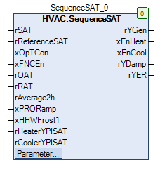

SequenceSUPTemp (FB)¶
FUNCTION_BLOCK SequenceSUPTemp
Short Description¶
Supply air temperature control for a air-handling unit with energy recovery (continuous recirculation damper system and energy recovery) including releases for active heating and cooling.Typical application: Supply air temperature control in a air-handling unit
Portrayal¶

Functional Description¶
General¶
Enabling / disabling of the controller xOpTCon¶
Enabling / disabling the free night cooling xFNCEn¶
Delayed start of the control xPRORamp or xHHWFrost1¶
Feedback of the control signals rHeaterYPISAT and rCoolerYPISAT respectively¶
General control signal from the sequence control rYGen¶
Enabling / disabling the active heating xEnHeat¶
Enabling / disabling of active cooling xEnCool¶
Control signal for the damper system rYDamp¶
Control signal for the energy recovery system rYER¶
Visualization¶
Codesys¶
- InOut:
Scope Name Type Initial Comment Input rSAT REAL Supply air temperature in °C
rReferenceSAT REAL Nominal supply air temperature in °C
xOpTCon BOOL Enable / disable the controller ( FALSE = disable, TRUE = enable )
xFNCEn BOOL FALSE Enable / Disable free night cooling ( FALSE = Disable, TRUE = Enable )
rOAT REAL Outside air temperature in °C
rRAT REAL Exhaust air temperature in °C
rAverage2h REAL Outdoor temperature average over 2 hours in °C
xPRORamp BOOL FALSE Display - Control signal ramp after start-up mode ( FALSE = Off, TRUE = On )
xHHWFrost1 BOOL FALSE Display - Status - Frost protection - Level 1 ( FALSE = Off, TRUE = On )
rHeaterYPISAT REAL 0.0 Control signal from the supply air temperature controller for active heating in %
rCoolerYPISAT REAL 0.0 Control signal from the supply air temperature controller for active cooling in %
Output rYGen REAL General control signal from sequence control in % ( 0 - 100.0 % )
xEnHeat BOOL Enable / disable active heating ( FALSE = disable, TRUE = enable )
xEnCool BOOL Enable / disable active cooling ( FALSE = disable, TRUE = enable )
rYDamp REAL Control signal for the damper system in % ( 0 - 100.0 % )
rYER REAL Control signal for the energy recovery system in % ( 0 - 100.0 % )
Input rSetpoint_CoolOAT REAL 14.0 Threshold value for enabling the active cooling ( outdoor temperature average over 2 hours ) in °C
r2ER REAL 100.0 Parameter x2 for the sequence - energy recovery in % ( y2 = 0.0 % )
r1ER REAL 30.0 Parameter x1 for the sequence - energy recovery in % ( y2 = 100.0 % )
r2Damp REAL 30.0 Parameter x2 for the sequence flap system in % ( y2 = 100.0 % )
r1Damp REAL 0.0 Parameter x1 for the sequence - damper system in % ( y2 = 0.0 % )
rTn REAL 200.0 Reset time - Sequence controller in seconds
rKp REAL 3.5 Gain factor - Sequence controller